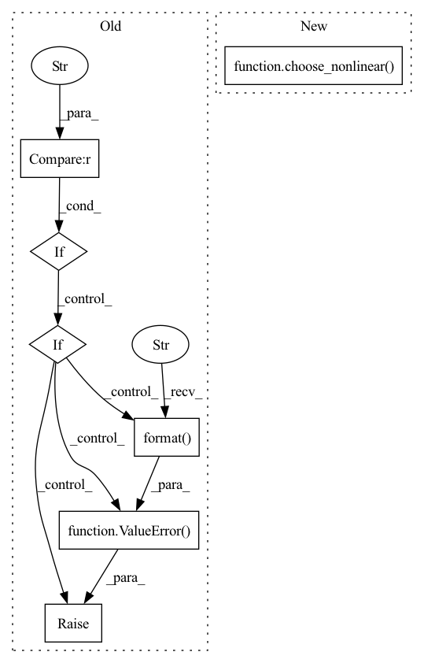

Pattern ID :1607

Before Change
self.conv1d = nn.Conv1d(in_channels, out_channels, kernel_size, stride=stride, dilation=dilation)
if self.nonlinear:
if self.nonlinear == "relu":
self.nonlinear1d = nn.ReLU()
elif self.nonlinear == "leaky-relu":
self.nonlinear1d = nn.LeakyReLU()
else:
raise ValueError("Not support nonlinear {}".format(self.nonlinear))
if self.dropout:
self.dropout1d = nn.Dropout(dropout)
After Change
self.conv1d = nn.Conv1d(in_channels, out_channels, kernel_size, stride=stride, dilation=dilation)
if self.nonlinear:
self.nonlinear1d = choose_nonlinear(nonlinear)
if self.dropout:
self.dropout1d = nn.Dropout(dropout)
In pattern: SUPERPATTERN
Frequency: 3
Non-data size: 7
Instances
Fragment ID: 2944340
Project Name: tky823/dnn-based_source_separation
Commit Name: 64531bda6a98db471a3bfec05b151120e4cbe9b6
Time: 2021-10-09
Author: 40362510+tky823@users.noreply.github.com
File Name: src/models/cunet.py
Class Name: ControlConvBlock
Method Name: __init__
Parent Class: nn.Module
Fragment ID: 2944341
Project Name: tky823/dnn-based_source_separation
Commit Name: 64531bda6a98db471a3bfec05b151120e4cbe9b6
Time: 2021-10-09
Author: 40362510+tky823@users.noreply.github.com
File Name: src/models/cunet.py
Class Name: ControlDenseBlock
Method Name: __init__
Parent Class: nn.Module
Fragment ID: 2944342
Project Name: tky823/dnn-based_source_separation
Commit Name: 10282099ca12b94e9b9870841d4de0252506baab
Time: 2021-12-05
Author: delta9guitar97@gmail.com
File Name: src/models/wavenet.py
Class Name: WaveNet
Method Name: __init__
Parent Class: nn.Module